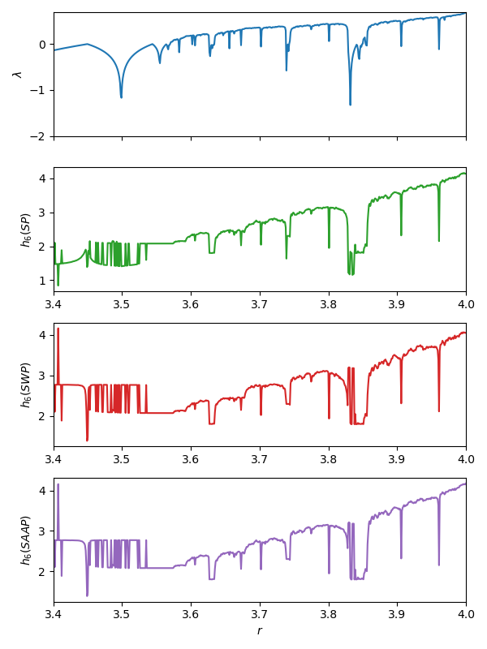

Permutation (symbolic)
Entropies.SymbolicPermutation — TypeSymbolicPermutation(; τ = 1, m = 3, lt = Entropies.isless_rand) <: ProbabilityEstimator
SymbolicWeightedPermutation(; τ = 1, m = 3, lt = Entropies.isless_rand) <: ProbabilityEstimator
SymbolicAmplitudeAwarePermutation(; τ = 1, m = 3, A = 0.5, lt = Entropies.isless_rand) <: ProbabilityEstimatorSymbolic, permutation-based probabilities/entropy estimators.
Uses embedding dimension $m = 3$ with embedding lag $\tau = 1$ by default. The minimum dimension $m$ is 2 (there are no sorting permutations of single-element state vectors).
Repeated values during symbolization
In the original implementation of permutation entropy [BandtPompe2002], equal values are ordered after their order of appearance, but this can lead to erroneous temporal correlations, especially for data with low-amplitude resolution [Zunino2017]. Here, we resolve this issue by letting the user provide a custom "less-than" function. The keyword lt accepts a function that decides which of two state vector elements are smaller. If two elements are equal, the default behaviour is to randomly assign one of them as the largest (lt = Entropies.isless_rand). For data with low amplitude resolution, computing probabilities multiple times using the random approach may reduce these erroneous effects.
To get the behaviour described in Bandt and Pompe (2002), use lt = Base.isless).
Properties of original signal preserved
SymbolicPermutation: Preserves ordinal patterns of state vectors (sorting information). This implementation is based on Bandt & Pompe et al. (2002)[BandtPompe2002] and Berger et al. (2019) [Berger2019].SymbolicWeightedPermutation: LikeSymbolicPermutation, but also encodes amplitude information by tracking the variance of the state vectors. This implementation is based on Fadlallah et al. (2013)[Fadlallah2013].SymbolicAmplitudeAwarePermutation: LikeSymbolicPermutation, but also encodes amplitude information by considering a weighted combination of absolute amplitudes of state vectors, and relative differences between elements of state vectors. See description below for explanation of the weighting parameterA. This implementation is based on Azami & Escudero (2016) [Azami2016].
Probability estimation
Univariate time series
To estimate probabilities or entropies from univariate time series, use the following methods:
probabilities(x::AbstractVector, est::SymbolicProbabilityEstimator). Constructs state vectors fromxusing embedding lagτand embedding dimensionm, symbolizes state vectors, and computes probabilities as (weighted) relative frequency of symbols.genentropy(x::AbstractVector, est::SymbolicProbabilityEstimator; α=1, base = 2)computes probabilities by callingprobabilities(x::AbstractVector, est), then computer the order-αgeneralized entropy to the given base.
Speeding up repeated computations
A pre-allocated integer symbol array s can be provided to save some memory allocations if the probabilities are to be computed for multiple data sets.
Note: it is not the array that will hold the final probabilities that is pre-allocated, but the temporary integer array containing the symbolized data points. Thus, if provided, it is required that length(x) == length(s) if x is a Dataset, or length(s) == length(x) - (m-1)τ if x is a univariate signal that is to be embedded first.
Use the following signatures (only works for SymbolicPermutation).
probabilities!(s::Vector{Int}, x::AbstractVector, est::SymbolicPermutation) → ps::Probabilities
probabilities!(s::Vector{Int}, x::AbstractDataset, est::SymbolicPermutation) → ps::ProbabilitiesMultivariate datasets
Although not dealt with in the original paper describing the estimators, numerically speaking, permutation entropies can also be computed for multivariate datasets with dimension ≥ 2 (but see caveat below). Such datasets may be, for example, preembedded time series. Then, just skip the delay reconstruction step, compute and symbols directly from the $L$ existing state vectors $\{\mathbf{x}_1, \mathbf{x}_2, \ldots, \mathbf{x_L}\}$.
probabilities(x::AbstractDataset, est::SymbolicProbabilityEstimator). Compute ordinal patterns of the state vectors ofxdirectly (without doing any embedding), symbolize those patterns, and compute probabilities as (weighted) relative frequencies of symbols.genentropy(x::AbstractDataset, est::SymbolicProbabilityEstimator). Computes probabilities from symbol frequencies usingprobabilities(x::AbstractDataset, est::SymbolicProbabilityEstimator), then computes the order-αgeneralized (permutation) entropy to the given base.
Caveat: A dynamical interpretation of the permutation entropy does not necessarily hold if computing it on generic multivariate datasets. Method signatures for Datasets are provided for convenience, and should only be applied if you understand the relation between your input data, the numerical value for the permutation entropy, and its interpretation.
Description
All symbolic estimators use the same underlying approach to estimating probabilities.
Embedding, ordinal patterns and symbolization
Consider the $n$-element univariate time series $\{x(t) = x_1, x_2, \ldots, x_n\}$. Let $\mathbf{x_i}^{m, \tau} = \{x_j, x_{j+\tau}, \ldots, x_{j+(m-1)\tau}\}$ for $j = 1, 2, \ldots n - (m-1)\tau$ be the $i$-th state vector in a delay reconstruction with embedding dimension $m$ and reconstruction lag $\tau$. There are then $N = n - (m-1)\tau$ state vectors.
For an $m$-dimensional vector, there are $m!$ possible ways of sorting it in ascending order of magnitude. Each such possible sorting ordering is called a motif. Let $\pi_i^{m, \tau}$ denote the motif associated with the $m$-dimensional state vector $\mathbf{x_i}^{m, \tau}$, and let $R$ be the number of distinct motifs that can be constructed from the $N$ state vectors. Then there are at most $R$ motifs; $R = N$ precisely when all motifs are unique, and $R = 1$ when all motifs are the same.
Each unique motif $\pi_i^{m, \tau}$ can be mapped to a unique integer symbol $0 \leq s_i \leq M!-1$. Let $S(\pi) : \mathbb{R}^m \to \mathbb{N}_0$ be the function that maps the motif $\pi$ to its symbol $s$, and let $\Pi$ denote the set of symbols $\Pi = \{ s_i \}_{i\in \{ 1, \ldots, R\}}$.
Probability computation
SymbolicPermutation
The probability of a given motif is its frequency of occurrence, normalized by the total number of motifs (with notation from [Fadlallah2013]),
\[p(\pi_i^{m, \tau}) = \dfrac{\sum_{k=1}^N \mathbf{1}_{u:S(u) = s_i} \left(\mathbf{x}_k^{m, \tau} \right) }{\sum_{k=1}^N \mathbf{1}_{u:S(u) \in \Pi} \left(\mathbf{x}_k^{m, \tau} \right)} = \dfrac{\sum_{k=1}^N \mathbf{1}_{u:S(u) = s_i} \left(\mathbf{x}_k^{m, \tau} \right) }{N},\]
where the function $\mathbf{1}_A(u)$ is the indicator function of a set $A$. That is, $\mathbf{1}_A(u) = 1$ if $u \in A$, and $\mathbf{1}_A(u) = 0$ otherwise.
SymbolicAmplitudeAwarePermutation
Amplitude-aware permutation entropy is computed analogously to regular permutation entropy but probabilities are weighted by amplitude information as follows.
\[p(\pi_i^{m, \tau}) = \dfrac{\sum_{k=1}^N \mathbf{1}_{u:S(u) = s_i} \left( \mathbf{x}_k^{m, \tau} \right) \, a_k}{\sum_{k=1}^N \mathbf{1}_{u:S(u) \in \Pi} \left( \mathbf{x}_k^{m, \tau} \right) \,a_k} = \dfrac{\sum_{k=1}^N \mathbf{1}_{u:S(u) = s_i} \left( \mathbf{x}_k^{m, \tau} \right) \, a_k}{\sum_{k=1}^N a_k}.\]
The weights encoding amplitude information about state vector $\mathbf{x}_i = (x_1^i, x_2^i, \ldots, x_m^i)$ are
\[a_i = \dfrac{A}{m} \sum_{k=1}^m |x_k^i | + \dfrac{1-A}{d-1} \sum_{k=2}^d |x_{k}^i - x_{k-1}^i|,\]
with $0 \leq A \leq 1$. When $A=0$ , only internal differences between the elements of $\mathbf{x}_i$ are weighted. Only mean amplitude of the state vector elements are weighted when $A=1$. With, $0<A<1$, a combined weighting is used.
SymbolicWeightedPermutation
Weighted permutation entropy is also computed analogously to regular permutation entropy, but adds weights that encode amplitude information too:
\[p(\pi_i^{m, \tau}) = \dfrac{\sum_{k=1}^N \mathbf{1}_{u:S(u) = s_i} \left( \mathbf{x}_k^{m, \tau} \right) \, w_k}{\sum_{k=1}^N \mathbf{1}_{u:S(u) \in \Pi} \left( \mathbf{x}_k^{m, \tau} \right) \,w_k} = \dfrac{\sum_{k=1}^N \mathbf{1}_{u:S(u) = s_i} \left( \mathbf{x}_k^{m, \tau} \right) \, w_k}{\sum_{k=1}^N w_k}.\]
The weighted permutation entropy is equivalent to regular permutation entropy when weights are positive and identical ($w_j = \beta \,\,\, \forall \,\,\, j \leq N$ and $\beta > 0)$. Weights are dictated by the variance of the state vectors.
Let the aritmetic mean of state vector $\mathbf{x}_i$ be denoted by
\[\mathbf{\hat{x}}_j^{m, \tau} = \frac{1}{m} \sum_{k=1}^m x_{j + (k+1)\tau}.\]
Weights are then computed as
\[w_j = \dfrac{1}{m}\sum_{k=1}^m (x_{j+(k+1)\tau} - \mathbf{\hat{x}}_j^{m, \tau})^2.\]
Note: in equation 7, section III, of the original paper, the authors write
\[w_j = \dfrac{1}{m}\sum_{k=1}^m (x_{j-(k-1)\tau} - \mathbf{\hat{x}}_j^{m, \tau})^2.\]
But given the formula they give for the arithmetic mean, this is not the variance of $\mathbf{x}_i$, because the indices are mixed: $x_{j+(k-1)\tau}$ in the weights formula, vs. $x_{j+(k+1)\tau}$ in the arithmetic mean formula. This seems to imply that amplitude information about previous delay vectors are mixed with mean amplitude information about current vectors. The authors also mix the terms "vector" and "neighboring vector" (but uses the same notation for both), making it hard to interpret whether the sign switch is a typo or intended. Here, we use the notation above, which actually computes the variance for $\mathbf{x}_i$.
Entropy computation
The generalized order-α Renyi entropy[Rényi1960] can be computed over the probability distribution of symbols as $H(m, \tau, \alpha) = \dfrac{\alpha}{1-\alpha} \log \left( \sum_{j=1}^R p_j^\alpha \right)$. Permutation entropy, as described in Bandt and Pompe (2002), is just the limiting case as $α \to1$, that is $H(m, \tau) = - \sum_j^R p(\pi_j^{m, \tau}) \ln p(\pi_j^{m, \tau})$.
Note: Do not confuse the order of the generalized entropy (α) with the order m of the permutation entropy (which controls the symbol size). Permutation entropy is usually estimated with α = 1, but the implementation here allows the generalized entropy of any dimension to be computed from the symbol frequency distribution.
Example
This example reproduces an example from Bandt and Pompe (2002), where the permutation entropy is compared with the largest Lyapunov exponents from time series of the chaotic logistic map. Entropy estimates using SymbolicWeightedPermutation and SymbolicAmplitudeAwarePermutation are added here for comparison.
using Entropies, DynamicalSystems, PyPlot
ds = Systems.logistic()
rs = 3.4:0.001:4
N_lyap, N_ent = 100000, 10000
m, τ = 6, 1 # Symbol size/dimension and embedding lag
# Generate one time series for each value of the logistic parameter r
lyaps = Float64[]
hs_perm = Float64[]
hs_wtperm = Float64[]
hs_ampperm = Float64[]
base = Base.MathConstants.e
# Original paper doesn't use random assignment for ties, here: sort after order of occurrence
lt = Base.isless
est = SymbolicPermutation(m = m, τ = τ, lt = lt)
est_aa = SymbolicAmplitudeAwarePermutation(m = m, τ = τ, lt = lt)
est_wt = SymbolicWeightedPermutation(m = m, τ = τ, lt = lt)
for r in rs
ds.p[1] = r
push!(lyaps, lyapunov(ds, N_lyap))
x = trajectory(ds, N_ent) # time series
hperm = Entropies.genentropy(x, est, base = base)
hampperm = Entropies.genentropy(x, est_aa, base = base)
hwtperm = Entropies.genentropy(x, SymbolicWeightedPermutation(m = m, τ = τ), base = base)
push!(hs_perm, hperm); push!(hs_ampperm, hampperm); push!(hs_wtperm, hwtperm);
end
f = figure(figsize = (6, 8))
a1 = subplot(411)
plot(rs, lyaps); ylim(-2, log(2)); ylabel("\$\\lambda\$")
a1.axes.get_xaxis().set_ticklabels([])
xlim(rs[1], rs[end]);
a2 = subplot(412)
plot(rs, hs_perm; color = "C2"); xlim(rs[1], rs[end]);
xlabel(""); ylabel("\$h_6 (SP)\$")
a3 = subplot(413)
plot(rs, hs_wtperm; color = "C3"); xlim(rs[1], rs[end]);
xlabel(""); ylabel("\$h_6 (SWP)\$")
a4 = subplot(414)
plot(rs, hs_ampperm; color = "C4"); xlim(rs[1], rs[end]);
xlabel("\$r\$"); ylabel("\$h_6 (SAAP)\$")
tight_layout()
savefig("permentropy.png")
- BandtPompe2002Bandt, Christoph, and Bernd Pompe. "Permutation entropy: a natural complexity measure for time series." Physical review letters 88.17 (2002): 174102.
- Berger2019Berger, Sebastian, et al. "Teaching Ordinal Patterns to a Computer: Efficient Encoding Algorithms Based on the Lehmer Code." Entropy 21.10 (2019): 1023.
- Fadlallah2013Fadlallah, Bilal, et al. "Weighted-permutation entropy: A complexity measure for time series incorporating amplitude information." Physical Review E 87.2 (2013): 022911.
- Rényi1960A. Rényi, Proceedings of the fourth Berkeley Symposium on Mathematics, Statistics and Probability, pp 547 (1960)
- Azami2016Azami, H., & Escudero, J. (2016). Amplitude-aware permutation entropy: Illustration in spike detection and signal segmentation. Computer methods and programs in biomedicine, 128, 40-51.
- Fadlallah2013Fadlallah, Bilal, et al. "Weighted-permutation entropy: A complexity measure for time series incorporating amplitude information." Physical Review E 87.2 (2013): 022911.
- Zunino2017Zunino, L., Olivares, F., Scholkmann, F., & Rosso, O. A. (2017). Permutation entropy based time series analysis: Equalities in the input signal can lead to false conclusions. Physics Letters A, 381(22), 1883-1892.